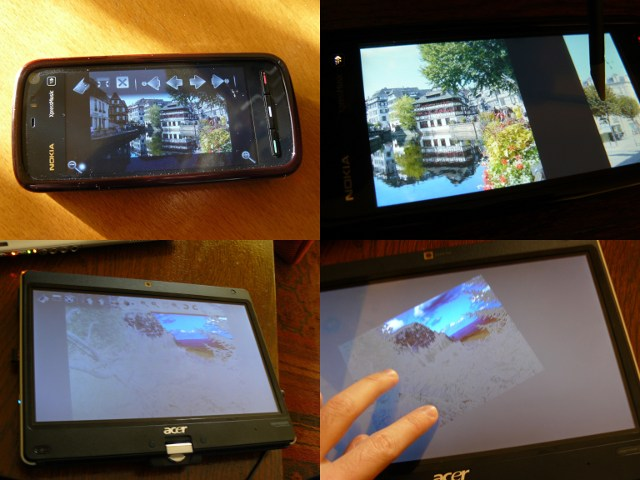

MihPhoto is meant to be a simple touchscreen-friendly image viewer. There a lot of very good image viewers, including many opensource ones, but most of them are very difficult to handle on a touchscreen. This application was designed with touchscreens in mind so it is most useful if you have a touchscreen. To use the application just open an image; then you can use the a swipe gesture to browse trough all the images located in the same folder as the first one.
MihPhoto works best on multitouch devices. On devices (or operating systems) that don't support multitouch, the application also includes a single-touch mode which can be enabled with a command line parameter.
